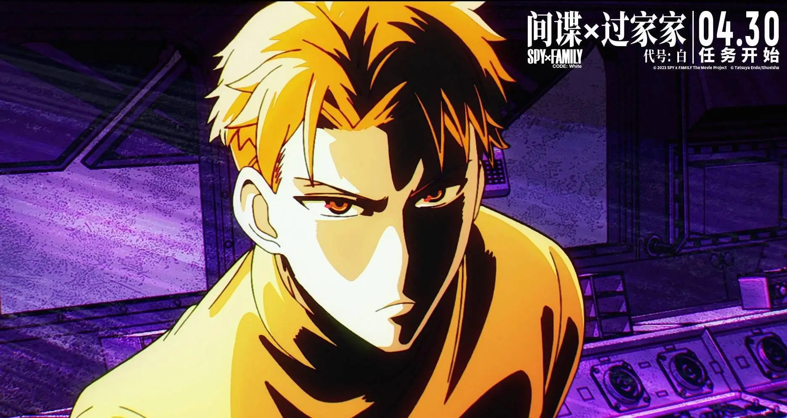
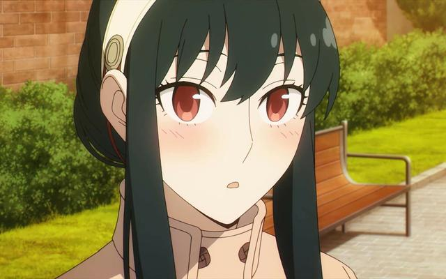
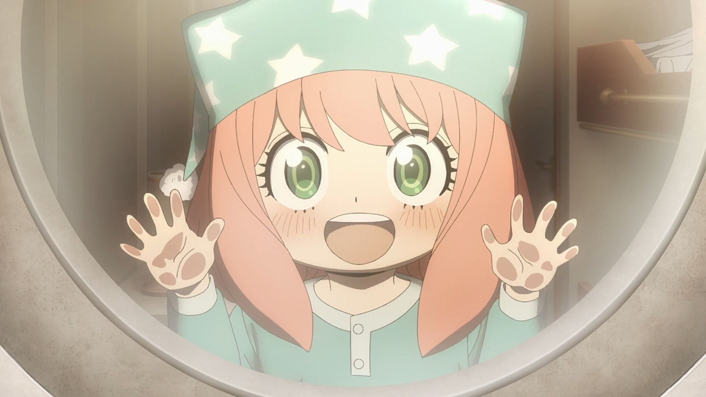
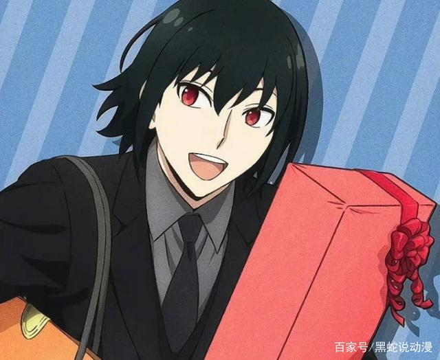
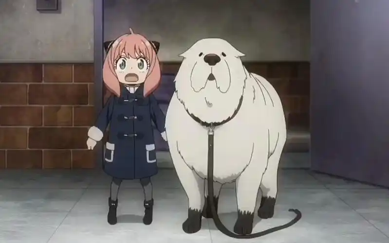

|
人物简介 | 剧情简介 | 作者介绍 | 大众评价 | 返回主页 |
一、黄昏（劳埃德·福杰）  黄昏是漫画《间谍过家家》及其衍生作品的主角之一，西人民共和国情报局对东科WISE下属的一名间谍，代号为“黄昏”。为了完成任务，他化名为“劳埃德·福杰”，并收养了一个名叫“阿尼亚”的小女孩作为自己的养女。黄昏与约尔结婚后，三人开始了新的生活。 黄昏是一个身材高挑的帅哥，留着一头亚麻色的短发，拥有一双蓝色的眼眸。他常穿一身灰色的西装，上衣的衣领左侧别着一个胸针，系着红色领带，戴着黑色手套和黑色皮鞋。黄昏的性格虽然看似冷酷，但实际上充满了人情味，十分在乎“家人”的心情。他在选择阿尼亚作为自己的养女后，尽管经常被淘气的阿尼亚耍得团团转，但还是会尽量满足她的要求。 黄昏的任务是为了调查威胁东西两国和平的人物——东国国家统一党总裁多诺万·德斯蒙。上级给予了他一个绝密任务，要求他组建一个家庭并潜入德斯蒙儿子就读的名门学校。黄昏扮演成精神科医生劳埃德·福杰，与实为杀手的妻子约尔和拥有读心术的女儿阿尼亚共同组成了三口之家。 二、约尔·福杰  约尔·福杰，漫画《间谍过家家》及其衍生作品的主角之一。 约尔是一名代号为“荆棘公主”的杀手，为了隐瞒自己的杀手身份，她接受了以精神科医生“劳埃德·福杰”这一身份进行伪装的间谍黄昏的求婚，随后从“约尔·布莱尔”改姓为“约尔·福杰”，并与黄昏以及他的养女阿尼亚·福杰一起开始了三口之家的生活。 约尔的旧名为“约尔·布莱尔”，出生于东人民共和国境内的尼尔伯格的东边。 她的双亲均已逝世，有一个年龄相差很大的弟弟尤里·布莱尔。她在与黄昏结婚后改姓为“约尔·福杰”。虽然约尔表面上是东国首都的巴林特市政厅的一名女性办事员，但真实身份是代号为“荆棘公主”的杀手。为了隐瞒身份，约尔接受了黄昏的求婚，与黄昏组成了家庭，并与黄昏以及他的养女阿尼亚·福杰一起生活。 约尔是一名身材高挑的黑发美人，瞳色为暗红色。她的面容和身材都很好，只要打扮一下就会很受欢迎。她在上班时会戴着一个白色头饰，穿着工作单位指定的工作服。在以杀手身份出现时，她会换上一个黄色的装饰着花朵的发饰、一件黑色的连衣长裙、一双黑色的过膝高跟长筒靴，以及在脖子附近挂上一份吊坠。在日常生活中，她则按照实际要求打扮自己，还经常戴着一双耳饰。 三、阿尼亚·福杰  阿尼亚诞生于某个组织的实验，被称为“实验体007”。在逃离组织后，阿尼亚来到某所地下机构的孤儿院里生活。之后，阿尼亚被黄昏选为自己的养女，并得到了自己的新名字“阿尼亚·福杰”。 而在这之后，阿尼亚与随后加入的新家庭成员约尔·福杰一起组成了三口之家。 阿尼亚是一名身材娇小的小女孩，留着一头及肩粉色长发，戴着一对黑色头饰。她有着一双绿色的眼眸以及一张精致的脸庞。常穿一件装饰着蝴蝶结的连衣裙、一双长长的白色袜子以及一双黑色的鞋子。头上还戴着奇怪的小巫师帽状的发饰。得以进入伊甸学园就读后，黄昏为阿尼亚购置了一套校服，外加冬装外套、背心、毛衣各一份。而在与贝姬一起外出去百货商店购物时，作为二人第一次购物的纪念，阿尼亚购买了以商店的吉祥物为样子的羊型钥匙扣，并挂在自己的书包上。 四、尤里·布莱尔  尤里有一个年龄相差很大的姐姐约尔·布莱尔，双亲均在二人小时候逝世。 长大后，他成为了东人民共和国外务省的精英，但在工作1年后他便被东国的国家保安局招到里面担任少尉，成为了市民们所称呼的“秘密警察”的一员。因为国家保安局的这份工作伴随着危险，为了不让约尔担心，更重要的是他不想让她知道自己在从事肮脏的工作，所以他特地隐藏了这一身份。 尤里身材高挑，留着一头黑色短发。在以秘密警察的身份工作时，尤里会穿上灰色的工作服。而在日常生活中，尤里经常穿着一身黑色西装、一双黑色鞋子以及一对竖纹袜子。他还外穿一件外套、戴着一副黑色手套。他有时还会随身携带一个手提式的行李箱。 五、邦德  邦德是在东国旧政权下以军事为目的、企图制造出IQ高得离谱的动物实验“苹果”计划下的实验动物，被研究人员称为“8号”。然而，随着“苹果”计划的流产，邦德被流进了黑市中，被过激派的大学生们所购买。 在解决大学生们的事件后，它被阿尼亚一家所收养，并被阿尼亚取了“邦德”这个名字。是个路痴。 邦德是一只毛茸茸的白色大型犬，它的四肢根部为黑色，肉球为灰色，爪子为白色。耳朵很短，有着一双豆豆眼。 它的年纪看上去很大。 脖子上的黑色大蝴蝶领结是阿尼亚为它系上的。 虽然邦德看上去很大，但它的体格实际上不怎么健壮，一旦沾水就会暴露出它瘦巴巴的身躯。 |